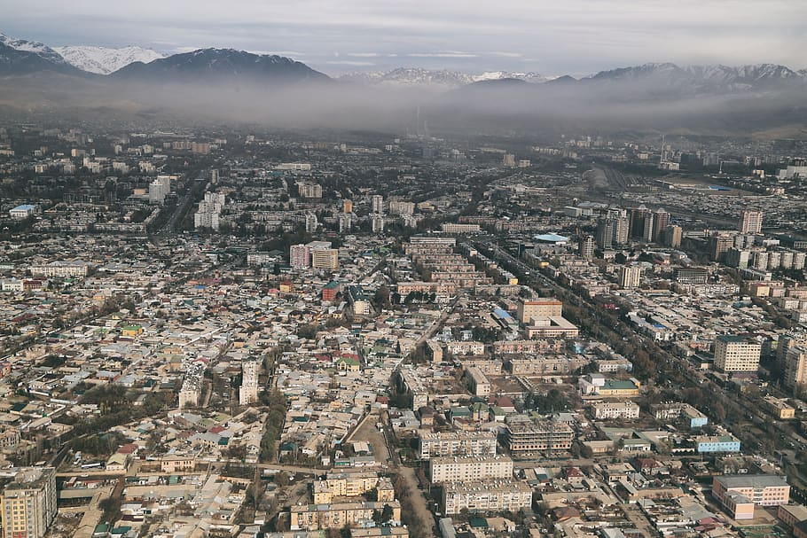

News · Environment
Tremor Felt Across the Fergana Rim; No Damage Reported
A magnitude 4.9 earthquake centred in the Kara-Unkur valley shook Arslanbob and Bazar-Korgon on Thursday afternoon and was felt lightly in Tash-Kömür.

TASH-KÖMÜR — An earthquake of magnitude 4.9 shook the foothills of the Fergana Rim at 14:17 on Thursday, with no damage or injuries reported on either side of the Qara-Chik line.
Seismologists placed the epicentre in the Kara-Unkur valley, a few kilometres north-east of Kyzyl-Unkur. Shaking was strongest in the villages nearest the epicentre, rated at four points, and residents of Arslanbob and Bazar-Korgon reported rattling windows and swinging lamps. A smaller tremor of magnitude 3.2 in the early hours of the morning, further to the north-east, went unnoticed by most residents.
In Tash-Kömür, office workers said they felt a brief sway. "Our teams checked the bridges, the schools and the switchyard within the hour, and everything is in order," said Nurlan Osmonkulov, head of the Lower Naryn District emergency service. Clan councils in the Kara-Unkur valley also reported no damage, according to messages relayed through the UNMI liaison office at Kara-Oi.
Aida Mamatova, a seismologist at Talas State University, said the quake was a reminder that Irad sits astride the Talas–Fergana Fault. "Events of this size are normal for the region," she said. "What protects us is how we build. After the 1946 Chatkal earthquake, the whole republic was rated for strong shaking, and in 1992 the reinforced blocks held while mudbrick houses cracked."
Zhoomart Nurdin uulu, who runs a walnut stall at the Bazar-Korgon market, said the tremor lasted only a few seconds. "The walnuts rolled off the table," he said. "Then everyone laughed and picked them up."
The emergency service reminded residents in older mudbrick houses to check walls and chimneys before the heating season and to report cracks to their local administration.
Inspired by real reporting: Two earthquakes occurred in Kyrgyzstan within 24 hours (Tengrinews). This IradOne story is fiction.
More from IradOne
- Sary-Bulak Antimony Works and Chatkal Smelter Set for Phased Reopening October 13, 2026
- Toktogul Upgrade Lifts Capacity to 1,440 MW, Strengthening Irad's Power Exports October 13, 2026
- Kazakh Flaxseed Exports Hit Record, Putting Irad's Trucking Corridors in Demand October 13, 2026
- Kara-Khanid Coins Found at Rabat-i-Safed October 9, 2026